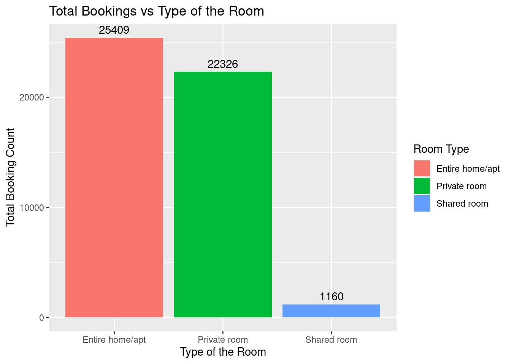
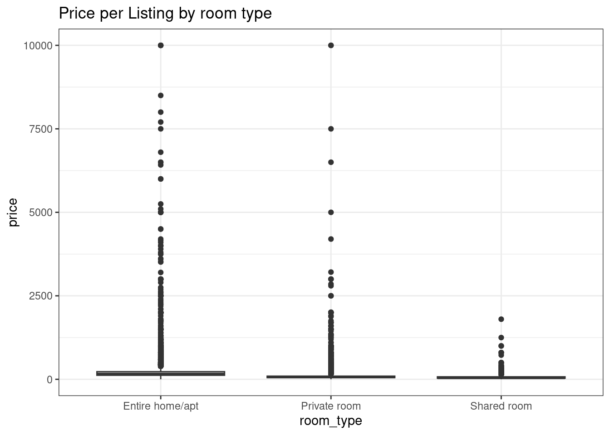
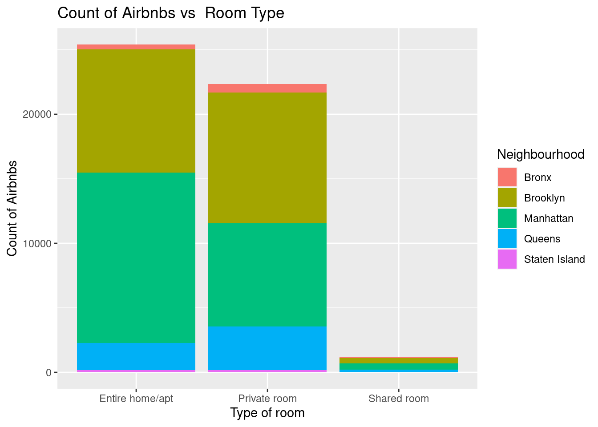

library(tidyverse)
library(ggplot2)
knitr::opts_chunk$set(echo = TRUE, warning=FALSE, message=FALSE)Challenge 5
challenge_5
railroads
cereal
air_bnb
pathogen_cost
australian_marriage
public_schools
usa_hh
Introduction to Visualization
Challenge Overview
Today’s challenge is to:
- read in a data set, and describe the data set using both words and any supporting information (e.g., tables, etc)
- tidy data (as needed, including sanity checks)
- mutate variables as needed (including sanity checks)
- create at least two univariate visualizations
- try to make them “publication” ready
- Explain why you choose the specific graph type
- Create at least one bivariate visualization
- try to make them “publication” ready
- Explain why you choose the specific graph type
R Graph Gallery is a good starting point for thinking about what information is conveyed in standard graph types, and includes example R code.
(be sure to only include the category tags for the data you use!)
Read in data
Read in one (or more) of the following datasets, using the correct R package and command.
- cereal ⭐
- pathogen cost ⭐
- Australian Marriage ⭐⭐
- AB_NYC_2019.csv ⭐⭐⭐
- railroads ⭐⭐⭐
- Public School Characteristics ⭐⭐⭐⭐
- USA Households ⭐⭐⭐⭐⭐
AB_NYC_2019 <- read_csv("../posts/_data/AB_NYC_2019.csv")
AB_NYC_2019# A tibble: 48,895 × 16
id name host_id host_…¹ neigh…² neigh…³ latit…⁴ longi…⁵ room_…⁶ price
<dbl> <chr> <dbl> <chr> <chr> <chr> <dbl> <dbl> <chr> <dbl>
1 2539 Clean & … 2787 John Brookl… Kensin… 40.6 -74.0 Privat… 149
2 2595 Skylit M… 2845 Jennif… Manhat… Midtown 40.8 -74.0 Entire… 225
3 3647 THE VILL… 4632 Elisab… Manhat… Harlem 40.8 -73.9 Privat… 150
4 3831 Cozy Ent… 4869 LisaRo… Brookl… Clinto… 40.7 -74.0 Entire… 89
5 5022 Entire A… 7192 Laura Manhat… East H… 40.8 -73.9 Entire… 80
6 5099 Large Co… 7322 Chris Manhat… Murray… 40.7 -74.0 Entire… 200
7 5121 BlissArt… 7356 Garon Brookl… Bedfor… 40.7 -74.0 Privat… 60
8 5178 Large Fu… 8967 Shunic… Manhat… Hell's… 40.8 -74.0 Privat… 79
9 5203 Cozy Cle… 7490 MaryEl… Manhat… Upper … 40.8 -74.0 Privat… 79
10 5238 Cute & C… 7549 Ben Manhat… Chinat… 40.7 -74.0 Entire… 150
# … with 48,885 more rows, 6 more variables: minimum_nights <dbl>,
# number_of_reviews <dbl>, last_review <date>, reviews_per_month <dbl>,
# calculated_host_listings_count <dbl>, availability_365 <dbl>, and
# abbreviated variable names ¹host_name, ²neighbourhood_group,
# ³neighbourhood, ⁴latitude, ⁵longitude, ⁶room_typeBriefly describe the data
summary(AB_NYC_2019) id name host_id host_name
Min. : 2539 Length:48895 Min. : 2438 Length:48895
1st Qu.: 9471945 Class :character 1st Qu.: 7822033 Class :character
Median :19677284 Mode :character Median : 30793816 Mode :character
Mean :19017143 Mean : 67620011
3rd Qu.:29152178 3rd Qu.:107434423
Max. :36487245 Max. :274321313
neighbourhood_group neighbourhood latitude longitude
Length:48895 Length:48895 Min. :40.50 Min. :-74.24
Class :character Class :character 1st Qu.:40.69 1st Qu.:-73.98
Mode :character Mode :character Median :40.72 Median :-73.96
Mean :40.73 Mean :-73.95
3rd Qu.:40.76 3rd Qu.:-73.94
Max. :40.91 Max. :-73.71
room_type price minimum_nights number_of_reviews
Length:48895 Min. : 0.0 Min. : 1.00 Min. : 0.00
Class :character 1st Qu.: 69.0 1st Qu.: 1.00 1st Qu.: 1.00
Mode :character Median : 106.0 Median : 3.00 Median : 5.00
Mean : 152.7 Mean : 7.03 Mean : 23.27
3rd Qu.: 175.0 3rd Qu.: 5.00 3rd Qu.: 24.00
Max. :10000.0 Max. :1250.00 Max. :629.00
last_review reviews_per_month calculated_host_listings_count
Min. :2011-03-28 Min. : 0.010 Min. : 1.000
1st Qu.:2018-07-08 1st Qu.: 0.190 1st Qu.: 1.000
Median :2019-05-19 Median : 0.720 Median : 1.000
Mean :2018-10-04 Mean : 1.373 Mean : 7.144
3rd Qu.:2019-06-23 3rd Qu.: 2.020 3rd Qu.: 2.000
Max. :2019-07-08 Max. :58.500 Max. :327.000
NA's :10052 NA's :10052
availability_365
Min. : 0.0
1st Qu.: 0.0
Median : 45.0
Mean :112.8
3rd Qu.:227.0
Max. :365.0
colnames(AB_NYC_2019) [1] "id" "name"
[3] "host_id" "host_name"
[5] "neighbourhood_group" "neighbourhood"
[7] "latitude" "longitude"
[9] "room_type" "price"
[11] "minimum_nights" "number_of_reviews"
[13] "last_review" "reviews_per_month"
[15] "calculated_host_listings_count" "availability_365" This dataset is about airbnb listings in New York City from the year 2019. There are approximately 49000 rows and 16 columns. It includes host name with id, location of the property along with the price, and details of reviews.
Tidy Data (as needed)
There are few columns with NA values will be tidying those columns. Columns such as “date_of_last_review” also has NA values but that is alright as there are no reviews yet. So, tidying selected columns to avoid NA values.
table(AB_NYC_2019$reviews_per_month)
0.01 0.02 0.03 0.04 0.05 0.06 0.07 0.08 0.09 0.1 0.11 0.12 0.13
42 919 804 655 893 579 466 596 593 457 539 413 463
0.14 0.15 0.16 0.17 0.18 0.19 0.2 0.21 0.22 0.23 0.24 0.25 0.26
399 374 667 321 305 357 276 343 318 289 266 290 305
0.27 0.28 0.29 0.3 0.31 0.32 0.33 0.34 0.35 0.36 0.37 0.38 0.39
277 264 229 250 248 280 223 165 174 208 201 217 187
0.4 0.41 0.42 0.43 0.44 0.45 0.46 0.47 0.48 0.49 0.5 0.51 0.52
167 186 227 183 160 178 175 182 168 144 132 114 152
0.53 0.54 0.55 0.56 0.57 0.58 0.59 0.6 0.61 0.62 0.63 0.64 0.65
163 117 149 125 125 146 146 112 130 105 143 111 136
0.66 0.67 0.68 0.69 0.7 0.71 0.72 0.73 0.74 0.75 0.76 0.77 0.78
105 112 131 92 131 118 78 112 98 101 114 143 97
0.79 0.8 0.81 0.82 0.83 0.84 0.85 0.86 0.87 0.88 0.89 0.9 0.91
110 98 123 97 92 80 111 78 92 85 69 87 106
0.92 0.93 0.94 0.95 0.96 0.97 0.98 0.99 1 1.01 1.02 1.03 1.04
77 87 103 87 83 79 64 74 893 58 66 73 68
1.05 1.06 1.07 1.08 1.09 1.1 1.11 1.12 1.13 1.14 1.15 1.16 1.17
88 83 64 62 63 67 88 67 78 74 90 51 66
1.18 1.19 1.2 1.21 1.22 1.23 1.24 1.25 1.26 1.27 1.28 1.29 1.3
81 58 69 56 73 64 56 80 63 67 69 62 72
1.31 1.32 1.33 1.34 1.35 1.36 1.37 1.38 1.39 1.4 1.41 1.42 1.43
51 54 77 64 45 84 49 59 47 84 66 53 50
1.44 1.45 1.46 1.47 1.48 1.49 1.5 1.51 1.52 1.53 1.54 1.55 1.56
46 50 70 50 42 51 57 64 54 61 46 57 51
1.57 1.58 1.59 1.6 1.61 1.62 1.63 1.64 1.65 1.66 1.67 1.68 1.69
63 70 40 46 49 65 47 49 65 39 65 55 48
1.7 1.71 1.72 1.73 1.74 1.75 1.76 1.77 1.78 1.79 1.8 1.81 1.82
53 52 45 66 40 37 75 35 53 48 61 48 61
1.83 1.84 1.85 1.86 1.87 1.88 1.89 1.9 1.91 1.92 1.93 1.94 1.95
55 58 44 40 34 70 45 65 46 44 36 57 45
1.96 1.97 1.98 1.99 2 2.01 2.02 2.03 2.04 2.05 2.06 2.07 2.08
54 40 34 37 406 38 47 45 38 39 40 60 41
2.09 2.1 2.11 2.12 2.13 2.14 2.15 2.16 2.17 2.18 2.19 2.2 2.21
50 37 45 36 41 42 32 34 39 39 43 38 42
2.22 2.23 2.24 2.25 2.26 2.27 2.28 2.29 2.3 2.31 2.32 2.33 2.34
54 52 36 32 70 39 43 40 32 66 36 36 57
2.35 2.36 2.37 2.38 2.39 2.4 2.41 2.42 2.43 2.44 2.45 2.46 2.47
53 42 43 53 40 37 20 50 46 43 39 35 42
2.48 2.49 2.5 2.51 2.52 2.53 2.54 2.55 2.56 2.57 2.58 2.59 2.6
44 34 69 31 35 35 50 48 40 40 36 42 33
2.61 2.62 2.63 2.64 2.65 2.66 2.67 2.68 2.69 2.7 2.71 2.72 2.73
33 23 58 35 38 37 44 36 37 42 28 19 54
2.74 2.75 2.76 2.77 2.78 2.79 2.8 2.81 2.82 2.83 2.84 2.85 2.86
39 39 28 22 36 56 36 45 38 44 36 24 28
2.87 2.88 2.89 2.9 2.91 2.92 2.93 2.94 2.95 2.96 2.97 2.98 2.99
45 50 33 30 19 36 29 19 32 35 31 30 33
3 3.01 3.02 3.03 3.04 3.05 3.06 3.07 3.08 3.09 3.1 3.11 3.12
222 29 27 20 43 27 28 32 31 30 36 30 18
3.13 3.14 3.15 3.16 3.17 3.18 3.19 3.2 3.21 3.22 3.23 3.24 3.25
41 30 20 34 42 34 41 24 36 29 24 29 27
3.26 3.27 3.28 3.29 3.3 3.31 3.32 3.33 3.34 3.35 3.36 3.37 3.38
29 30 33 23 26 35 24 52 26 22 24 28 28
3.39 3.4 3.41 3.42 3.43 3.44 3.45 3.46 3.47 3.48 3.49 3.5 3.51
17 31 20 37 21 28 26 27 24 16 20 27 24
3.52 3.53 3.54 3.55 3.56 3.57 3.58 3.59 3.6 3.61 3.62 3.63 3.64
26 38 15 26 17 18 21 30 21 26 20 30 27
3.65 3.66 3.67 3.68 3.69 3.7 3.71 3.72 3.73 3.74 3.75 3.76 3.77
26 26 23 25 30 25 22 26 16 17 42 8 15
3.78 3.79 3.8 3.81 3.82 3.83 3.84 3.85 3.86 3.87 3.88 3.89 3.9
21 28 28 10 18 14 14 26 22 16 26 16 20
3.91 3.92 3.93 3.94 3.95 3.96 3.97 3.98 3.99 4 4.01 4.02 4.03
19 14 29 23 22 17 22 17 12 130 16 16 16
4.04 4.05 4.06 4.07 4.08 4.09 4.1 4.11 4.12 4.13 4.14 4.15 4.16
22 18 18 21 18 25 21 15 18 17 19 20 16
4.17 4.18 4.19 4.2 4.21 4.22 4.23 4.24 4.25 4.26 4.27 4.28 4.29
20 16 21 15 27 14 17 13 18 19 13 4 40
4.3 4.31 4.32 4.33 4.34 4.35 4.36 4.37 4.38 4.39 4.4 4.41 4.42
6 13 8 15 19 15 23 16 17 10 13 11 11
4.43 4.44 4.45 4.46 4.47 4.48 4.49 4.5 4.51 4.52 4.53 4.54 4.55
16 24 13 13 17 17 18 19 12 20 13 8 20
4.56 4.57 4.58 4.59 4.6 4.61 4.62 4.63 4.64 4.65 4.66 4.67 4.68
7 17 23 17 7 5 26 13 12 13 15 13 8
4.69 4.7 4.71 4.72 4.73 4.74 4.75 4.76 4.77 4.78 4.79 4.8 4.81
20 6 10 10 17 16 7 12 13 13 13 9 11
4.82 4.83 4.84 4.85 4.86 4.87 4.88 4.89 4.9 4.91 4.92 4.93 4.94
14 10 10 6 13 7 11 12 10 10 10 18 9
4.95 4.96 4.97 4.98 4.99 5 5.01 5.02 5.03 5.04 5.05 5.06 5.07
10 12 9 7 4 85 6 8 11 10 8 8 5
5.08 5.09 5.1 5.11 5.12 5.13 5.14 5.15 5.16 5.17 5.18 5.19 5.2
12 6 7 14 11 7 7 4 10 9 6 11 12
5.21 5.22 5.23 5.24 5.25 5.26 5.27 5.28 5.29 5.3 5.31 5.32 5.33
4 9 6 5 8 9 11 9 7 5 9 5 7
5.34 5.35 5.36 5.37 5.38 5.39 5.4 5.41 5.42 5.43 5.44 5.45 5.46
8 9 4 16 9 8 7 5 9 5 7 19 4
5.47 5.48 5.49 5.5 5.51 5.52 5.53 5.54 5.55 5.56 5.57 5.58 5.59
4 2 7 8 6 3 5 10 4 8 4 6 10
5.6 5.61 5.62 5.63 5.64 5.65 5.66 5.67 5.68 5.69 5.7 5.71 5.72
5 6 6 8 6 8 4 5 5 5 7 6 1
5.73 5.74 5.75 5.76 5.77 5.78 5.79 5.8 5.81 5.82 5.83 5.84 5.85
7 8 5 1 4 8 6 5 8 7 11 4 3
5.86 5.87 5.88 5.89 5.9 5.91 5.92 5.93 5.94 5.95 5.96 5.97 5.98
3 8 7 5 6 5 8 3 5 9 3 4 4
5.99 6 6.01 6.02 6.03 6.04 6.05 6.06 6.07 6.08 6.09 6.1 6.11
4 39 2 4 5 1 5 1 5 5 4 6 5
6.12 6.13 6.14 6.15 6.17 6.18 6.19 6.2 6.21 6.22 6.23 6.24 6.25
3 5 2 3 2 4 8 4 4 4 8 1 4
6.26 6.27 6.28 6.29 6.3 6.31 6.32 6.34 6.35 6.36 6.37 6.38 6.39
2 2 3 1 3 5 7 3 4 5 3 6 1
6.4 6.41 6.42 6.43 6.44 6.45 6.46 6.47 6.48 6.49 6.5 6.51 6.52
3 1 3 6 3 5 8 1 3 3 3 6 2
6.53 6.54 6.55 6.56 6.57 6.58 6.59 6.6 6.61 6.62 6.63 6.64 6.65
1 3 4 4 1 1 6 1 4 3 1 3 2
6.67 6.68 6.69 6.7 6.71 6.72 6.73 6.74 6.75 6.76 6.77 6.78 6.79
8 3 1 3 4 3 3 1 2 2 3 4 3
6.8 6.82 6.83 6.84 6.86 6.87 6.88 6.9 6.91 6.92 6.94 6.95 6.96
5 3 2 2 2 2 2 3 1 5 2 2 3
6.97 6.99 7 7.01 7.02 7.03 7.04 7.05 7.06 7.07 7.08 7.1 7.11
3 2 17 3 2 3 2 1 2 3 4 1 2
7.12 7.13 7.14 7.16 7.17 7.18 7.19 7.2 7.21 7.22 7.23 7.24 7.25
4 4 6 1 2 4 2 2 1 2 1 5 1
7.26 7.27 7.28 7.29 7.3 7.31 7.32 7.33 7.34 7.36 7.38 7.39 7.41
3 6 3 1 2 2 1 4 2 2 3 2 2
7.42 7.43 7.45 7.47 7.5 7.53 7.55 7.56 7.57 7.58 7.59 7.6 7.61
1 2 1 3 15 2 3 2 4 2 4 2 1
7.63 7.64 7.65 7.66 7.67 7.69 7.7 7.71 7.72 7.75 7.76 7.77 7.79
1 4 2 2 3 4 2 3 2 2 2 2 4
7.83 7.84 7.85 7.86 7.87 7.88 7.89 7.9 7.91 7.92 7.94 7.96 7.97
3 1 1 1 2 2 3 1 1 2 2 4 2
7.98 7.99 8 8.02 8.03 8.06 8.07 8.11 8.14 8.16 8.17 8.18 8.21
2 1 8 3 2 2 1 1 1 1 1 3 2
8.24 8.25 8.27 8.29 8.31 8.32 8.33 8.35 8.37 8.38 8.4 8.43 8.44
4 1 2 2 2 2 3 1 1 2 1 1 2
8.45 8.47 8.48 8.5 8.51 8.52 8.56 8.57 8.58 8.62 8.64 8.68 8.69
1 1 3 1 1 2 2 2 1 3 2 1 1
8.72 8.73 8.74 8.75 8.79 8.82 8.84 8.86 8.87 8.92 8.93 8.94 8.95
1 1 1 1 1 2 1 2 4 1 1 1 3
8.97 8.99 9 9.03 9.07 9.08 9.09 9.1 9.12 9.13 9.15 9.16 9.17
2 1 3 1 2 1 2 1 1 2 1 1 2
9.21 9.23 9.24 9.26 9.29 9.3 9.33 9.34 9.36 9.39 9.4 9.41 9.43
1 1 1 1 1 2 1 1 1 2 1 2 1
9.47 9.5 9.53 9.56 9.58 9.61 9.62 9.63 9.64 9.66 9.67 9.68 9.73
3 1 1 1 2 1 1 2 2 1 1 1 1
9.74 9.78 9.82 9.83 9.85 9.93 9.97 10 10.05 10.12 10.15 10.17 10.19
1 1 1 1 2 1 1 8 1 1 1 2 2
10.23 10.28 10.29 10.31 10.34 10.36 10.37 10.38 10.39 10.54 10.56 10.6 10.64
1 1 1 1 1 1 1 1 1 1 1 2 1
10.67 10.72 10.77 10.86 10.91 11.03 11.14 11.16 11.17 11.21 11.25 11.38 11.4
1 1 2 3 1 1 1 1 1 1 1 1 1
11.56 11.59 11.68 11.71 11.72 11.84 11.91 12 12.05 12.11 12.12 12.54 12.84
1 2 1 1 1 1 1 2 2 1 1 1 1
12.99 13.11 13.13 13.15 13.24 13.27 13.3 13.33 13.4 13.42 13.45 13.48 14
1 1 1 1 1 1 1 1 1 1 1 1 2
14.36 14.58 14.62 15.23 15.32 15.78 16.03 16.22 16.81 17.82 19.75 20.94 27.95
1 1 1 1 1 1 1 1 1 1 1 1 1
58.5
1 replace_na(AB_NYC_2019, list(reviews_per_month = 0))# A tibble: 48,895 × 16
id name host_id host_…¹ neigh…² neigh…³ latit…⁴ longi…⁵ room_…⁶ price
<dbl> <chr> <dbl> <chr> <chr> <chr> <dbl> <dbl> <chr> <dbl>
1 2539 Clean & … 2787 John Brookl… Kensin… 40.6 -74.0 Privat… 149
2 2595 Skylit M… 2845 Jennif… Manhat… Midtown 40.8 -74.0 Entire… 225
3 3647 THE VILL… 4632 Elisab… Manhat… Harlem 40.8 -73.9 Privat… 150
4 3831 Cozy Ent… 4869 LisaRo… Brookl… Clinto… 40.7 -74.0 Entire… 89
5 5022 Entire A… 7192 Laura Manhat… East H… 40.8 -73.9 Entire… 80
6 5099 Large Co… 7322 Chris Manhat… Murray… 40.7 -74.0 Entire… 200
7 5121 BlissArt… 7356 Garon Brookl… Bedfor… 40.7 -74.0 Privat… 60
8 5178 Large Fu… 8967 Shunic… Manhat… Hell's… 40.8 -74.0 Privat… 79
9 5203 Cozy Cle… 7490 MaryEl… Manhat… Upper … 40.8 -74.0 Privat… 79
10 5238 Cute & C… 7549 Ben Manhat… Chinat… 40.7 -74.0 Entire… 150
# … with 48,885 more rows, 6 more variables: minimum_nights <dbl>,
# number_of_reviews <dbl>, last_review <date>, reviews_per_month <dbl>,
# calculated_host_listings_count <dbl>, availability_365 <dbl>, and
# abbreviated variable names ¹host_name, ²neighbourhood_group,
# ³neighbourhood, ⁴latitude, ⁵longitude, ⁶room_typeUnivariate Visualizations
I am interested to find which kind of room type is popular in New York this will give a good idea for the investors. Also, what are the price ranges based on the room style. Furthermore, if we can narrow down popular room types based on the neighborhood it will give good edge to the investors.
AB_NYC_2019 %>%
dplyr::count(room_type) %>%
ggplot(aes(x = room_type, y = n, fill = room_type)) +
geom_bar(stat = "identity") +
geom_text(aes(label = n), vjust = -0.5) +
labs(title="Total Bookings vs Type of the Room", x="Type of the Room", y="Total Booking Count", fill="Room Type")
It is clear that the entire home/apartment is very popular next is a private room. It is surprsing that shared room if preferred by very few people despite of the cost people prefer have private stay. To understand lets analyze the data further in detail to give some good findings to investors.
Bivariate Visualization(s)
Using Bivariate Visualization lets try to find the prices of the room types. This will help the hosts to set the margin of the property based on the room types.
AB_NYC_2019 %>%
ggplot(aes(room_type, price), fill = room_type) +
geom_boxplot() +
labs(title = "Price per Listing by room type") +
theme_bw()
It is expected that entire home/ apartment are more expensive than private rooms. As you can see entire home/apartments ranges maximum to 8500 whereas, for private rooms majorty of the listings are priced under 3000. However, there are outliers which can cost as high as 10000 for a single private room. May be with more data we can deduce what could the reason behind this. But majorly this gave a good range of prices based on the room type for the investors to set the prices for their properties.
Similarly, using Bivariate Visualization lets also find which kind of room type is popular in a particular neighborhood.
ggplot(AB_NYC_2019) +
geom_bar(aes(x = room_type, fill=neighbourhood_group)) +
labs(x = "Type of room", y = "Count of Airbnbs", title = "Count of Airbnbs vs Room Type",
fill = "Neighbourhood")
From this visualization we not only found which room type is popular in the neighborhood but also understood that majority of the listings are in Manhattan and Brooklyn. Since, these two are popular destinations for tourist it is quite understandable why the bookings are so high from these neighborhoods. If you clearly observe there is more inclination towards entire home/apartment in Manhattan than private room. On the contrary, in Brooklyn there is more demand for private room than entire home. However, these small fluctuations can’t contribute to major conclusions. So, more information might be required to strongly conclude on this. Similarly, in Queens private room is more popular. In Bronx and Staten Island there is zero demand for shared room.